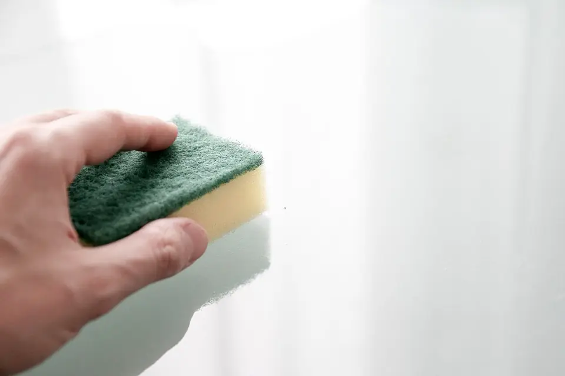
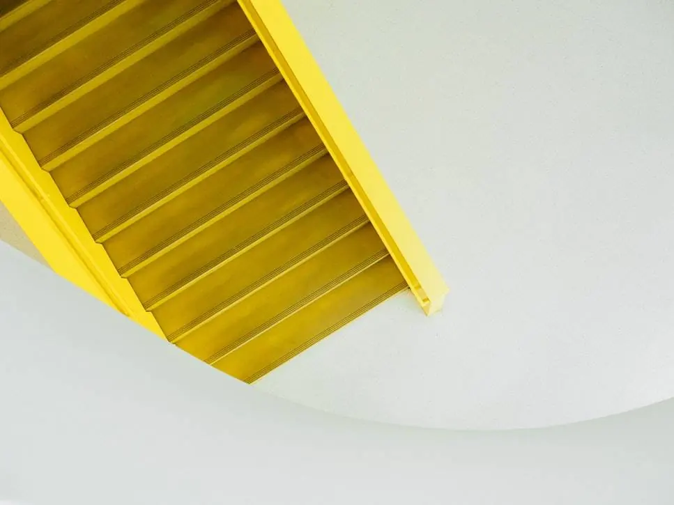
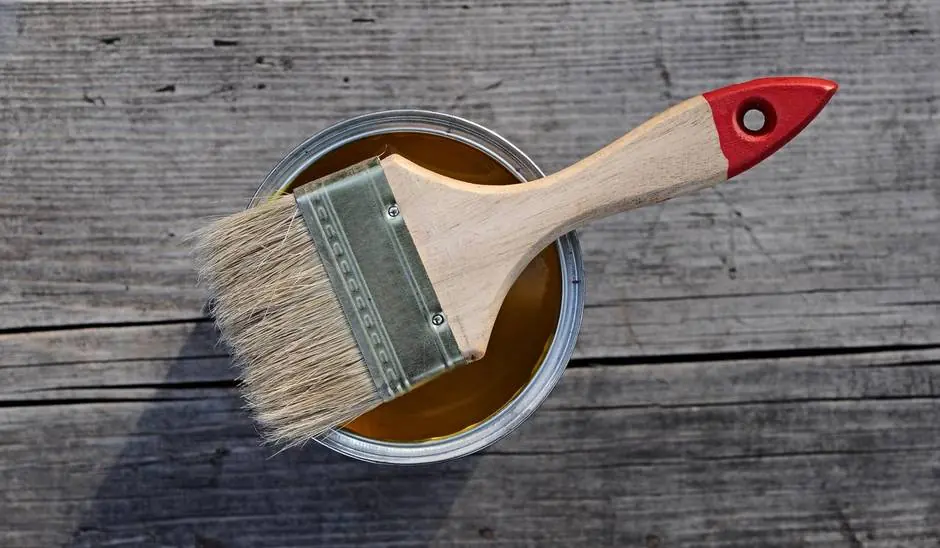
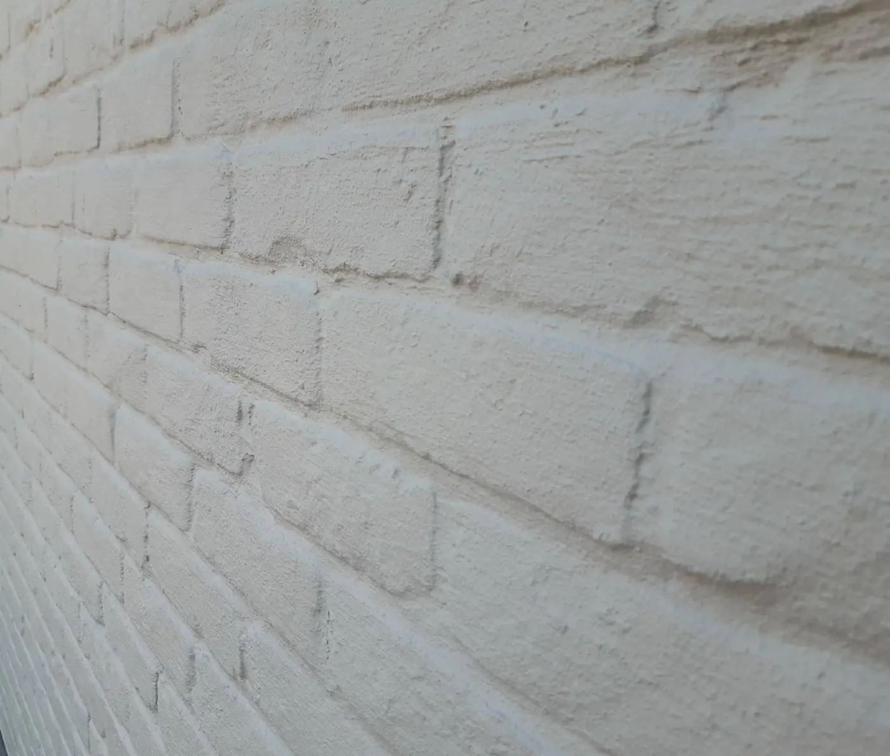

Hoe kan ik mijn muren ontvetten voor het schilderen?
Voordat je aan de slag kunt met de verfborstel, moeten de muren eerst gereinigd en ontvet worden. In deze blog leggen we uit hoe je muren kunt ontvetten voor het schilderen, waar je op moet letten en hoe je ook reeds geschilderde muren kunt reinigen.


Waar je op moet letten als je muren ontvet voor het schilderen
Dek allereerst alle meubels en de grond af met een zeil of doek om spatten van zeep of ammoniak te vermijden. Vervolgens zorg je ervoor dat de ondergrond die je gaat schilderen op de schilderwerken wordt voorbereid. Voor de verschillende soorten ondergrond gelden verschillende regels:
- Een houten ondergrond wordt indien nodig ontvet, licht opgeschuurd en grondig ontstoft.
- Bakstenen, cement- of betonmuren maak je met een harde borstel vrij van eventuele uitslag of verpoedering en ontstof je vervolgens.
- Gladde tegels worden eerst gereinigd en ontvet. Ook de voegen moet je onder handen nemen met een goede ontvetter en een schuursponsje. Laat de muur vervolgens goed drogen.
- Nieuw pleisterwerk kan je eerst afstoffen met een zachte borstel en nadien nog eens schoonmaken met een vochtige doek. Zijn de muren sterk vervuild, gebruik dan een goede ontvetter of ammoniakwater en laat goed drogen.
- Oude poreuze verflagen kan je ontstoffen met een zachte borstel. Afwassen is hier enkel nodig bij erg vette muren, en anders niet. Door eerst even met een natte doek of spons over de muur te wrijven, kan je te weten komen of de verf het vocht opneemt, donker kleurt en dus poreus is.
- Oude verflagen die niet poreus zijn, kan je eerst afwassen met een neutraal reinigingsmiddel en indien nodig ontvetten met een aangepaste ontvetter of ammoniakwater. Vervolgens spoel je goed en laat je de muur drogen.
- Gipsplaten ontstof je met een zachte borstel.
Je kan muren overigens perfect ontvetten met een scheutje dreft. Vervolgens raden we voor de meeste soorten ondergrond ook aan om de muren nog eens onder handen te nemen met water en wat ammoniak. Zo is al het vuil zeker verwijderd. Schuur de muur daarna op, zodat het oppervlak ruwer wordt en de verf beter zal kunnen hechten. Het ontvetten moet voor het schuren plaatsvinden, anders wordt het vet in het materiaal geschuurd en zal de verf moeilijk aan de muur hechten.
Muren ontvetten voor het schilderen is zowel noodzakelijk voor muren die eerder behangen waren als reeds geschilderde muren. Bij muren met behang moet je natuurlijk eerst het behang verwijderen. Voordat je de muren reinigt, doe je er trouwens ook goed aan om de muren eerst met een bezem, stofborstel of stofzuiger af te stoffen, zoals aangegeven in de opgesomde types ondergrond.
Ook reeds geschilderde muren kunt u reinigen
Zo goed als niemand slaagt erin om zijn muren jarenlang perfect proper te houden. Er kan altijd wel eens iemand tegen lopen of ergens mee blijven haperen en zo zwarte strepen of misschien zelfs lichte krassen veroorzaken. Afhankelijk van hoe vuil de muur is, het soort verf dat is gebruikt en de ondergrond kan een muur al dan niet eenvoudig gereinigd of ontvet worden.
Glans of halfglanzende verf is handig omdat deze heel eenvoudig kan worden schoongemaakt. De keerzijde is dan weer dat dergelijke verf sneller vuil wordt en dus vaker schoongemaakt moet worden. Test jouw schoonmaakproduct altijd eerst op een onopvallende plek op de muur om er zeker van te zijn dat er geen ongewenste reactie optreedt.
Matte verf is dan weer veel moeilijker om schoon te maken en het is telkens weer een mysterie hoe de verf zal reageren op het chemische contact met zeep. Bij latexverf hangt alles sterk af van de kwaliteit. Wanneer je latexverf koopt, vraag dan steeds advies over de schoonmaakmogelijkheden achteraf. De aankoop zal misschien wat duurder worden, maar dat spaar je dan weer uit als je jouw vervuilde muur eenvoudig kunt schoonmaken en niet volledig hoeft te herschilderen.
Een duurzaam schilderresultaat begint lang voor de eerste verflaag. Een correcte reiniging en voorbereiding van de ondergrond zorgen ervoor dat verf optimaal kan hechten en jarenlang mooi blijft. Tijdens een vrijblijvend plaatsbezoek bekijken we graag de staat van uw muren en adviseren we u over de meest geschikte aanpak. Ontdek meer over onze binnenschilderwerken.
Lees ook

3 tips om uw trap te schilderen
Een trap heeft heel wat te verduren en kan na een aantal jaren sporen van slijtage vertonen. Een frisse lik verf of…
Lees meer
Wanneer is het tijd voor een nieuwe lik verf?
Na verloop van tijd is je schilderwerk toe aan een nieuwe lik verf. Hoe weet je juist wanneer dit is?
Lees meer
Laat je woning kaleien door een professional
Kaleien is tegenwoordig een populaire techniek om je gevel een nieuwe uitstraling te geven.
Lees meerEen mooi resultaat begint met een goed gesprek.
Tijdens een vrijblijvend plaatsbezoek luisteren we naar uw wensen, geven we professioneel advies en bekijken we samen de mogelijkheden voor uw schilderwerken of interieurafwerking.